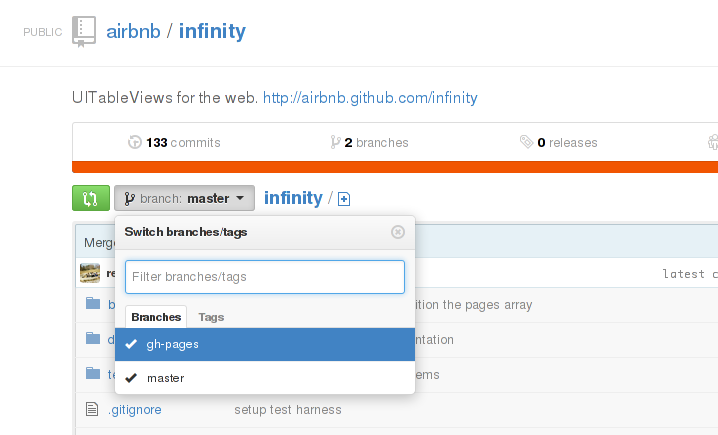

Disclaimer: Opinions expressed on this blog are solely my own and do not express the views or opinions of my employer(s), past or present.
Github pages is a platform for you to publish a static web page about your open source project(s) on Github.
Good examples of Github pages:
An “abused” example of Github pages:
Github pages have a url that goes like this:
http://<your username>.github.io/<project name>/
For example, my Github username is yanhan, and the project name I’ve showed above is algo_ghackers, hence the url.
Now, if you go to the repository for Infinity.js and take a look at its branches, you will see something like this:

Notice that alongside the master branch, there is a gh-pages branch. In fact, the contents of the gh-pages branch of Infinity.js is exactly what is used for its Github Pages webpage at http://airbnb.github.io/infinity/. This applies in general for all Github projects.
The below information is obtained from the official Github Pages documentation and this tutorial from almost 3 years back, along with some experimentation.
If you want to create a Github Page for your Github project, here are the steps:
Step 1: Checkout an orphan branch called gh-pages
git checkout --orphan gh-pages
This will create an orphan branch called gh-pages. Based on the git-checkout manpage, the first commit on an orphan branch has no parents, so it is disconnected from the history of your repository. This is perfect for our use case, after all, the history of the source code of a project probably should not feature as part of the history of its github page.
Step 2: Remove the tracked contents from working tree and index
git rm rf .
Again, this step may be optional depending on what you are trying to do.
Step 3: Track any contents you want to display
This means adding at least an index.html file, and more commonly the whole set of static content you want to display on your project’s Github page. Refer to the Github pages official documentation for more details.
Do not forget to make a commit when you are done.
Step 4: Push the gh-pages branch up to Github
Most commonly:
git push origin gh-pages
Adjust the remote name accordingly if it is not origin.
Step 5: Viewing your Masterpiece
Tadah! We are done. Or rather, almost done. If you go to any non-existent Github page, such as http://pages.github.com/123123, one part says:
“Are you trying to publish one?” It may take up to ten minutes until your page is available.
In the meantime, just relax.